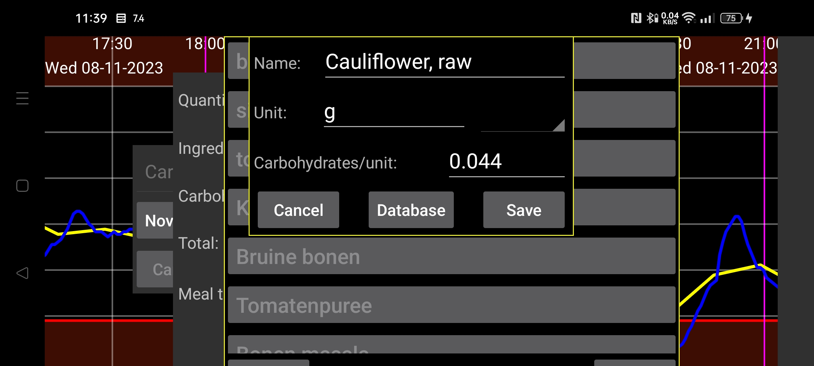

Задайте количество ингредиентов приема пищи. После этого рассчитывается общее содержание углеводов. Можно также указать количество углеводов для всего приема пищи или для ингредиента, и программа определит нужное количество ингредиента. Нажмите Добавить элемент, чтобы добавить элемент в прием пищи. В открывшемся диалоге можно выбрать ингредиент и указать его количество, либо общее количество углеводов всего приема пищи или этого элемента. Нажатие Выбрать или уже указанного ингредиента открывает список уже определенных ингредиентов. Новый ингредиент можно определить, нажав там Определить. Здесь задаются название и содержание углеводов в этом ингредиенте в указанной единице. Также можно нажать База данных, чтобы открыть базу состава продуктов, найти ингредиент, посмотреть состав продукта и нажатием Выбрать вставить название продукта и содержание углеводов в определение ингредиента.